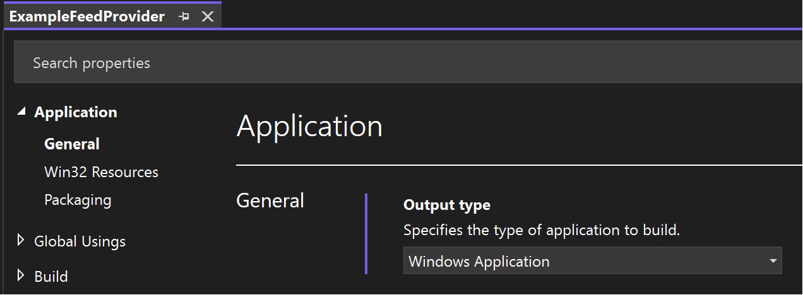

Implement a feed provider in a C# Windows App
Note
Some information relates to pre-released product, which may be substantially modified before it's commercially released. Microsoft makes no warranties, express or implied, with respect to the information provided here.
This article walks you through creating a simple feed provider that registers a feed content URI and implements the IFeedProvider interface. The methods of this interface are invoked by the Widgets Board to request custom query string parameters, typically to support authentication scenarios. Feed providers can support a single feed or multiple feeds.
To implement a feed provider using C++/WinRT, see Implement a feed provider in a win32 app (C++/WinRT).
Prerequisites
- Your device must have developer mode enabled. For more information see Enable your device for development.
- Visual Studio 2022 or later with the Universal Windows Platform development workload.
Create a new C# console app
In Visual Studio, create a new project. In the Create a new project dialog, set the language filter to "C#" and the platform filter to Windows, then select the Console App project template. Name the new project "ExampleFeedProvider". For this walkthrough, make sure that Place solution and project in the same directory is unchecked. When prompted, set the target .NET version to 6.0.
When the project loads, in Solution Explorer right-click the project name and select Properties. On the General page, scroll down to Target OS and select "Windows". Under Target OS Version, select version 10.022631.2787 or later.
Note that this walkthrough uses a console app that displays the console window when the feed is activated to enable easy debugging. When you are ready to publish your feed provider app, you can convert the console application to a Windows application by following the steps in Convert your console app to a Windows app.
Add references to the Windows App SDK NuGet package
This sample uses the latest stable Windows App SDK NuGet package. In Solution Explorer, right-click Dependencies and select Manage NuGet packages.... In the NuGet package manager, select the Browse tab and search for "Microsoft.WindowsAppSDK". Select the latest stable version in the Version drop-down and then click Install.
Add a FeedProvider class to handle feed operations
In Visual Studio, right-click the ExampleFeedProvider project in Solution Explorer and select Add->Class. In the Add class dialog, name the class "FeedProvider" and click Add. In the generated FeedProvider.cs file, update the class definition to indicate that it implements the IFeedProvider interface.
Create a CLSID that will be used to identify your feed provider for COM activation. Generate a GUID in Visual Studio by going to Tools->Create GUID. Save this GUID in a text file to be used later when packaging the feed provider app. Replace the GUID in the annotations for the FeedProvider class shown in the following example.
// FeedProvider.cs
using Microsoft.Windows.Widgets.Feeds.Providers;
...
[ComVisible(true)]
[ComDefaultInterface(typeof(IFeedProvider))]
[Guid("xxxxxxxx-xxxx-xxxx-xxxx-xxxxxxxxxxxx")]
public sealed class FeedProvider : IFeedProvider
Implement the IFeedProvider methods
In the next few sections, we'll implement the methods of the IFeedProvider interface.
Note
Objects passed into the callback methods of the IFeedProvider interface are only guaranteed to be valid within the callback. You should not store references to these objects because their behavior outside of the context of the callback is undefined.
OnFeedProviderEnabled
The OnFeedProviderEnabled method is invoked when a feed associated with the provider is created by the Widgets Board host. In the implementation of this method, generate a query string with the parameters that will be passed to the URL that provides the feed content, including any necessary authentication tokens. Create an instance of CustomQueryParametersUpdateOptions, passing in the FeedProviderDefinitionId from the event args that identifies the feed that has been enabled and the query string. Get the default FeedManager and call SetCustomQueryParameters to register the query string parameters with the Widgets Board.
// FeedProvider.cs
public void OnFeedProviderEnabled(FeedProviderEnabledArgs args)
{
Console.WriteLine($"{args.FeedProviderDefinitionId} feed provider was enabled.");
var updateOptions = new CustomQueryParametersUpdateOptions(args.FeedProviderDefinitionId, "param1¶m2");
FeedManager.GetDefault().SetCustomQueryParameters(updateOptions);
}
OnFeedProviderDisabled
OnFeedProviderDisabled is called when the Widgets Board when all of the feeds for this provider have been disabled. Feed providers are not required to perform any actions in response to these this method call. The method invocation can be used for telemetry purposes or to update the query string parameters or revoke authentication tokens, if needed. If the app only supports a single feed provider or if all feed providers supported by the app have been disabled, then the app can exit in response to this callback.
// FeedProvider.cs
public void OnFeedProviderDisabled(FeedProviderDisabledArgs args)
{
Console.WriteLine($"{args.FeedProviderDefinitionId} feed provider was disabled.");
}
OnFeedEnabled, OnFeedDisabled
OnFeedEnabled and OnFeedDisabled are invoked by the Widgets Board when a feed is enabled or disabled. Feed providers are not required to perform any actions in response to these method calls. The method invocation can be used for telemetry purposes or to update the query string parameters or revoke authentication tokens, if needed.
// FeedProvider.cs
public void OnFeedEnabled(FeedEnabledArgs args)
{
Console.WriteLine($"{args.FeedDefinitionId} feed was enabled.");
}
// FeedProvider.cs
public void OnFeedDisabled(FeedDisabledArgs args)
{
Console.WriteLine($"{args.FeedDefinitionId} feed was disabled.");
}
OnCustomQueryParametersRequested
OnCustomQueryParametersRequested is raised when the Widgets Board determines that the custom query parameters associated with the feed provider need to be refreshed. For example, this method may be raised if the operation to fetch feed content from the remote web service fails. The FeedProviderDefinitionId property of the CustomQueryParametersRequestedArgs passed into this method specifies the feed for which query string params are being requested. The provider should regenerate the query string and pass it back to the Widgets Board by calling SetCustomQueryParameters.
// FeedProvider.cs
public void OnCustomQueryParametersRequested(CustomQueryParametersRequestedArgs args)
{
Console.WriteLine($"CustomQueryParamaters were requested for {args.FeedProviderDefinitionId}.");
var updateOptions = new CustomQueryParametersUpdateOptions(args.FeedProviderDefinitionId, "param1¶m2");
FeedManager.GetDefault().SetCustomQueryParameters(updateOptions);
}
Implement a class factory that will instantiate FeedProvider on request
In order for the feed host to communicate with our feed provider, we must call CoRegisterClassObject. This function requires us to create an implementation of the IClassFactory that will create a class object for our FeedProvider class. We will implement our class factory in a self-contained helper class.
In Visual Studio, right-click the ExampleFeedProvider project in Solution Explorer and select Add->Class. In the Add class dialog, name the class "FactoryHelper" and click Add.
Replace the contents of the FactoryHelper.cs file with the following code. This code defines the IClassFactory interface and implements its two methods, CreateInstance and LockServer. This code is typical boilerplate for implementing a class factory and is not specific to the functionality of a feed provider except that we indicate that the class object being created implements the IFeedProvider interface.
// FactoryHelper.cs
using Microsoft.Windows.Widgets.Feeds.Providers;
using System.Runtime.InteropServices;
using WinRT;
namespace ExampleFeedProvider
{
namespace Com
{
static class Guids
{
public const string IClassFactory = "00000001-0000-0000-C000-000000000046";
public const string IUnknown = "00000000-0000-0000-C000-000000000046";
}
[ComImport(), InterfaceType(ComInterfaceType.InterfaceIsIUnknown), Guid(Guids.IClassFactory)]
internal interface IClassFactory
{
[PreserveSig]
int CreateInstance(IntPtr pUnkOuter, ref Guid riid, out IntPtr ppvObject);
[PreserveSig]
int LockServer(bool fLock);
}
static class ClassObject
{
public static void Register(Guid clsid, object pUnk, out uint cookie)
{
[DllImport("ole32.dll")]
static extern int CoRegisterClassObject(
[MarshalAs(UnmanagedType.LPStruct)] Guid rclsid,
[MarshalAs(UnmanagedType.IUnknown)] object pUnk,
uint dwClsContext,
uint flags,
out uint lpdwRegister);
int result = CoRegisterClassObject(clsid, pUnk, 0x4, 0x1, out cookie);
if (result != 0)
{
Marshal.ThrowExceptionForHR(result);
}
}
public static int Revoke(uint cookie)
{
[DllImport("ole32.dll")]
static extern int CoRevokeClassObject(uint dwRegister);
return CoRevokeClassObject(cookie);
}
}
}
internal class FeedProviderFactory<T> : Com.IClassFactory
where T : IFeedProvider, new()
{
public int CreateInstance(IntPtr pUnkOuter, ref Guid riid, out IntPtr ppvObject)
{
ppvObject = IntPtr.Zero;
if (pUnkOuter != IntPtr.Zero)
{
Marshal.ThrowExceptionForHR(CLASS_E_NOAGGREGATION);
}
if (riid == typeof(T).GUID || riid == Guid.Parse(Com.Guids.IUnknown))
{
// Create the instance of the .NET object
ppvObject = MarshalInspectable<IFeedProvider>.FromManaged(new T());
}
else
{
// The object that ppvObject points to does not support the
// interface identified by riid.
Marshal.ThrowExceptionForHR(E_NOINTERFACE);
}
return 0;
}
int Com.IClassFactory.LockServer(bool fLock)
{
return 0;
}
private const int CLASS_E_NOAGGREGATION = -2147221232;
private const int E_NOINTERFACE = -2147467262;
}
}
Register the feed provider class object with OLE
In the Program.cs file for our executable, we will call CoRegisterClassObject to register our feed provider with OLE, so that the Widgets Board can interact with it. Replace the contents of Program.cs with the following code. This uses the FeedProviderFactory interface we defined in a previous step to register the FeedProvider helper class. For debugging purposes, this example calls GetEnabledFeedProviders on the default FeedManager instance to get a list of FeedProviderInfo objects representing the enabled feed providers. The it loops through the enabled feed providers, using the EnabledFeedDefinitionIds property to list all enabled feed IDs.
// Program.cs
using Microsoft.Windows.Widgets.Feeds.Providers;
using Microsoft.Windows.Widgets.Providers;
using System;
using System.Runtime.InteropServices;
namespace ExampleFeedProvider
{
public static class Program
{
[DllImport("kernel32.dll")]
static extern IntPtr GetConsoleWindow();
[MTAThread]
static void Main(string[] args)
{
Console.WriteLine("FeedProvider Starting...");
if (args.Length > 0 && args[0] == "-RegisterProcessAsComServer")
{
WinRT.ComWrappersSupport.InitializeComWrappers();
uint registrationHandle;
var factory = new FeedProviderFactory<FeedProvider>();
Com.ClassObject.Register(typeof(FeedProvider).GUID, factory, out registrationHandle);
Console.WriteLine("Feed Provider registered.");
var existingFeedProviders = FeedManager.GetDefault().GetEnabledFeedProviders();
if (existingFeedProviders != null)
{
Console.WriteLine($"There are {existingFeedProviders.Length} FeedProviders currently outstanding:");
foreach (var feedProvider in existingFeedProviders)
{
Console.WriteLine($" ProviderId: {feedProvider.FeedProviderDefinitionId}, DefinitionIds: ");
var m = WidgetManager.GetDefault().GetWidgetIds();
if (feedProvider.EnabledFeedDefinitionIds != null)
{
foreach (var enabledFeedId in feedProvider.EnabledFeedDefinitionIds)
{
Console.WriteLine($" {enabledFeedId} ");
}
}
}
}
if (GetConsoleWindow() != IntPtr.Zero)
{
Console.WriteLine("Press ENTER to exit.");
Console.ReadLine();
}
else
{
while (true)
{
// You should fire an event when all the outstanding
// FeedProviders have been disabled and exit the app.
}
}
}
else
{
Console.WriteLine("Not being launched to service Feed Provider... exiting.");
}
}
}
}
Note that this code example imports the GetConsoleWindow function to determine if the app is running as a console application, the default behavior for this walkthrough. If function returns a valid pointer, we write debug information to the console. Otherwise, the app is running as a Windows app. In that case, we wait for the event that we set in OnFeedProviderDisabled method when the list of enabled feed providers is empty, and the we exit the app. For information on converting the example console app to a Windows app, see Convert your console app to a Windows app.
Package your feed provider app
In the current release, only packaged apps can be registered as feed providers. The following steps will take you through the process of packaging your app and updating the app manifest to register your app with the OS as a feed provider.
Create an MSIX packaging project
In Solution Explorer, right-click your solution and select Add->New Project.... In the Add a new project dialog, select the "Windows Application Packaging Project" template and click Next. Set the project name to "ExampleFeedProviderPackage" and click Create. When prompted, set the target version to build 22621 or later and click OK. Next, right-click the ExampleFeedProviderPackage project and select Add->Project reference. Select the ExampleFeedProvider project and click OK.
Add Windows App SDK package reference to the packaging project
You need to add a reference to the Windows App SDK nuget package to the MSIX packaging project. In Solution Explorer, double-click the ExampleFeedProviderPackage project to open the ExampleFeedProviderPackage.wapproj file. Add the following xml inside the Project element.
<!--ExampleWidgetProviderPackage.wapproj-->
<ItemGroup>
<PackageReference Include="Microsoft.WindowsAppSDK" Version="1.5.231116003-experimentalpr">
<IncludeAssets>build</IncludeAssets>
</PackageReference>
</ItemGroup>
Note
Make sure the Version specified in the PackageReference element matches the latest stable version you referenced in the previous step.
If the correct version of the Windows App SDK is already installed on the computer and you don't want to bundle the SDK runtime in your package, you can specify the package dependency in the Package.appxmanifest file for the ExampleFeedProviderPackage project.
<!--Package.appxmanifest-->
...
<Dependencies>
...
<PackageDependency Name="Microsoft.WindowsAppRuntime.1.5.233430000-experimental1" MinVersion="2000.638.7.0" Publisher="CN=Microsoft Corporation, O=Microsoft Corporation, L=Redmond, S=Washington, C=US" />
...
</Dependencies>
...
Update the package manifest
In Solution Explorer right-click the Package.appxmanifest file and select View Code to open the manifest xml file. Next you need to add some namespace declarations for the app package extensions we will be using. Add the following namespace definitions to the top-level Package element.
<!-- Package.appmanifest -->
<Package
...
xmlns:uap3="http://schemas.microsoft.com/appx/manifest/uap/windows10/3"
xmlns:com="http://schemas.microsoft.com/appx/manifest/com/windows10"
Inside the Application element, create a new empty element named Extensions. Make sure this comes after the closing tag for uap:VisualElements.
<!-- Package.appxmanifest -->
<Application>
...
<Extensions>
</Extensions>
</Application>
The first extension we need to add is the ComServer extension. This registers the entry point of the executable with the OS. This extension is the packaged app equivalent of registering a COM server by setting a registry key, and is not specific to widget providers.Add the following com:Extension element as a child of the Extensions element. Change the GUID in the Id attribute of the com:Class element to the GUID that you generated in a previous step when defining the FeedProvider class.
<!-- Package.appxmanifest -->
<Extensions>
<com:Extension Category="windows.comServer">
<com:ComServer>
<com:ExeServer Executable="ExampleFeedProvider\ExampleFeedProvider.exe" Arguments="-RegisterProcessAsComServer" DisplayName="C# Feed Provider App">
<com:Class Id="xxxxxxxx-xxxx-xxxx-xxxx-xxxxxxxxxxxx" DisplayName="FeedProvider" />
</com:ExeServer>
</com:ComServer>
</com:Extension>
</Extensions>
Next, add the extension that registers the app as a feed provider. Paste the uap3:Extension element in the following code snippet, as a child of the Extensions element. Be sure to replace the ClassId attribute of the COM element with the GUID you used in previous steps.
<!-- Package.appxmanifest -->
<Extensions>
...
<uap3:Extension Category="windows.appExtension">
<uap3:AppExtension Name="com.microsoft.windows.widgets.feeds" DisplayName="ContosoFeed" Id="com.examplewidgets.examplefeed" PublicFolder="Public">
<uap3:Properties>
<FeedProvider Icon="ms-appx:Assets\StoreLogo.png" Description="FeedDescription">
<Activation>
<!-- Apps exports COM interface which implements IFeedProvider -->
<CreateInstance ClassId="xxxxxxxx-xxxx-xxxx-xxxx-xxxxxxxxxxxx" />
</Activation>
<Definitions>
<Definition Id="Contoso_Feed"
DisplayName="Contoso_Feed Feed"
Description="Feed representing Contoso"
ContentUri="https://www.contoso.com/"
Icon="ms-appx:Images\StoreLogo.png">
</Definition>
<Definition Id="Fabrikam_Feed"
DisplayName="Fabrikam Feed"
Description="Feed representing Example"
ContentUri="https://www.fabrikam.com/"
Icon="ms-appx:Images\StoreLogo.png">
</Definition>
</Definitions>
</FeedProvider>
</uap3:Properties>
</uap3:AppExtension>
</uap3:Extension>
</Extensions>
For detailed descriptions and format information for all of these elements, see Feed provider package manifest XML format.
Testing your feed provider
Make sure you have selected the architecture that matches your development machine from the Solution Platforms drop-down, for example "x64". In Solution Explorer, right-click your solution and select Build Solution. Once this is done, right-click your ExampleWidgetProviderPackage and select Deploy. The console app should launch on deploy and you will see the feeds get enabled in the console output. Open the Widgets Board and you should see the new feeds in the tabs along the top of the feeds section.
Debugging your feed provider
After you have pinned your feeds, the Widget Platform will start your feed provider application in order to receive and send relevant information about the feed. To debug the running feed you can either attach a debugger to the running feed provider application or you can set up Visual Studio to automatically start debugging the feed provider process once it's started.
In order to attach to the running process:
- In Visual Studio click Debug -> Attach to process.
- Filter the processes and find your desired feed provider application.
- Attach the debugger.
In order to automatically attach the debugger to the process when it's initially started:
- In Visual Studio click Debug -> Other Debug Targets -> Debug Installed App Package.
- Filter the packages and find your desired feed provider package.
- Select it and check the box that says Do not launch, but debug my code when it starts.
- Click Attach.
Convert your console app to a Windows app
To convert the console app created in this walkthrough to a Windows app, right-click the ExampleFeedProvider project in Solution Explorer and select Properties. Under Application->General change the Output type from "Console Application" to "Windows Application".

Publishing your feed provider app
After you have developed and tested your feed provider you can publish your app on the Microsoft Store in order for users to install your feeds on their devices. For step by step guidance for publishing an app, see Publish your app in the Microsoft Store.
The Feeds Store Collection
After your app has been published on the Microsoft Store, you can request for your app to be included in the feeds Store Collection that helps users discover apps that feature Windows feeds. To submit your request, see Submit your Feed/Board for addition to the Store Collection.